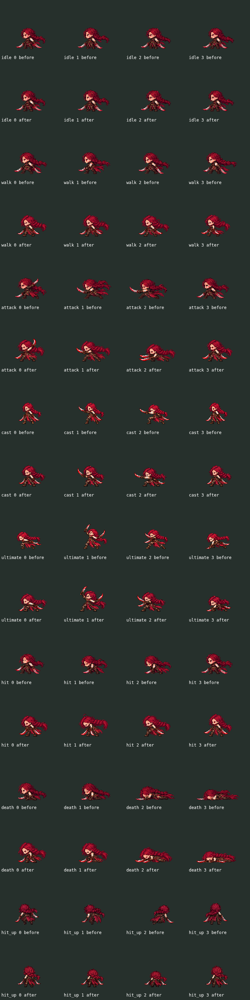

112 cuadros candidatos. 0 aprobados/instalados. Seis fallos de material nativo; este preview no certifica el juego.

Referencia: assets/ui/codex/champions/veyra.png. SHA256 d89d8328b31d3bfa57b42a7a8a4f3c7c06d9446f122d38f4f7a59c9a7c9b76ed.